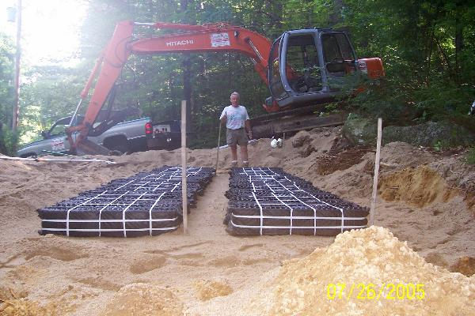

Water Lines
Residential and municipal water repairs, along with new water hookups.

Serving Bridgton and surrounding communities
Water lines, septic systems, foundations, roads, trucking, and winter work from a Bridgton company with roots going back to 1967.
What we do
Practical excavation services for homes, properties, local roads, and municipal water work.
Residential and municipal water repairs, along with new water hookups.
Excavation for septic system installation and repair.
Shorefront restoration and repair suited to western Maine properties.
Foundation excavation, drainage work, and preparation for landscaping.
Excavation and groundwork for building and landscape projects.
Road raking and resurfacing with equipment suited to gravel and dirt roads.
General trucking and material hauling with dump-truck equipment.
Snow plowing, sanding, and snow removal.
Our history
John Bosworth and Robert Hatch began a construction business called Better Homes in 1967, building, remodeling, and repairing homes while also taking on snow work. The business became Bosworth and Hatch, Inc. in 1996 and expanded into backhoe work. When John retired in 2007, Robert continued with his son Mark and the company became Hatch Excavation Inc., reflecting the work it performs today.
What to expect
Every property and project is different. The first step is a clear conversation about the work.
Call or email Hatch Excavation with the basics of your project.
Share the property location, type of work, timing, and any helpful photos.
Talk through site conditions and the information needed to prepare an estimate.
Once the scope is understood, discuss scheduling and completing the job.
Service area
Servicing Bridgton and the surrounding towns. For work nearby, call to discuss the location.
Start a conversation
When you call or email, it helps to include the property location, type of work, approximate timeline, and a few site photos when available.
This link opens your email app. Nothing is submitted or stored by this website.